ウジウジしてるのが今のお前
パリッと生きてるのが今の俺
先見てんのが今の俺
過去探してる今のお前
世界のいろんなもん感じる準備してるのが今の俺
日本に帰って安全地帯にいつももどりたくなっちゃってる今のお前
影響力操ってんのが今の俺
支えられてんのが今のお前
全体見て調整してるのが今の俺
今どうするかでオロオロしてるのが今のお前
仲間立ててんのが俺
相棒を下げたのが今回のお前
いつも自分抑えながら見守ってんのが俺
気づいたら自分の事考えちゃってんのが今のお前
考えて決めるのが俺
とりあえずやるのがお前
仲間にはちゃんと相談するのが今の俺
1人で隠して抱え込むのが今のお前
甘えられる事も嬉しいと思えるのが今の俺
甘える事にもビビってんのが今のお前
お前の事考えて悩んでるのが俺
自分の事で悩んでるのがお前
身内に頼る事がまず悪いと思ってないのが俺
自分の事大きく見せようと焦ってるのがお前
そんでもいつも心配してやってるのが俺
吐いた言葉に責任取ろうと頭抱えてんのが今のお前
将来必ずでっかくなる男が俺
過去の自分に追われて息切れしてんのがお前
受けた恩は忘れないのが俺
受けた恩を当たり前にしちゃったのが今のお前
きっちり腹決めてんのが今の俺
現実逃避してんのが今のお前
全体を見て付き合いしてるのが俺
自分都合でその場付き合いしてるのが今のお前
わからない事を知る努力をしてるのが今の俺
わからないのに勝手に決めつけてるのが今のお前
自分は本物だと信じてるのが今の俺
自分が本物か疑ってるのが今のお前
自分がやってきた事は間違ってないと証明しようと踏ん張ってんのが今の俺
自分がやってきた事はなんだったって止まってんのが今のお前
自分の道を真っ直ぐ進もうとするのが俺
どこに進んでいいのかわからなくなったのが今のお前
それでも見離さずに教えてやるのが俺
俺にも自分にもイラついちゃうのがお前
自分も痛めても怒ってあげてるのが今の俺
自分だけ痛いのが今のお前
伝える努力をしてるのが今の俺
聞く努力すらしなかったのが今のお前
必要な努力をしてノートとPCで整理してるのが今の俺
ノートに考えを整理すらしなくなったのが今のお前
いつも一緒に協力したいと思ってる俺
答えだけを言えって怒ってきたのがお前
まとめたものを共有したいから聞いてるのが俺
見てもくれなくなったのがお前
それでも歯食いしばって目こすってたのが俺
ハッキングされてるってキレたのがお前
ダメな事はダメって上にも言ったのが俺
大谷とランに言わなきゃいけない事すらふたをしたのがお前
わざわざ探したうえに時間と金払って1人でただ無意味に待ってたのが俺
お話する時間作ってくれませんかって持ちかけてきたのはごく最近のお前
怒らないが失礼だから他の人間にはやるなって怒らず分かるように伝えたつもりだったのが俺
親しき仲にも礼儀ありですと自問自答してたはずの人間がつい最近のお前
弁護士と話ししてて状況をちゃんと説明しなきゃいけないのが今のお前
誰にも言わずに麻布警察署にハト飛ばして確認してるのが今の俺
大橋いないって焦る氷室落ち着かせてホテル探して今後の話し含め連絡取り合ってるのが今の俺
バタバタして不安を感じてる残った下の子達にまず安心感与えないといけないのがお前
氷室とノブとランが連絡付かないって緩和剤しながら連絡とってるのが今の俺
ランに連絡させなきゃいけないのに連絡すらとれないのがお前
ランだの大谷ごとき都合悪い事は逃げるの知ってるから一ミリも驚く事がないのが俺
自分で決めた事に責任持ってランのケツ拭かないといけないのがお前
飯もタバコも吸えない環境で気張って先輩のけつふいてたのが今の俺
口切ったうえさらに連絡すらせずラクな相手とマッサージまで行ってやがったのがお前だよ
それでも中国人と1人ちゃんと戦ってなんとかしようとボロボロになったのが俺
その俺に去り際に俺のこと言ってんのかって最後の最後の出る時に脅してきたのがお前
自分で決めた事を人のせいにしないのが俺
大谷とランを繋げといて俺のせいにしたのがお前
相棒の顔にツバはいた奴殺す為にやってんのが俺
大谷にすら何も言えねーのが今のどうしようよねーお前
下げさせた頭軽くさせない為にその身内に100だけ渡してって頭下げたのが俺
口だけとか俺に吐き捨てて小銭で金投げ返してきたのがお前
相棒が軽く見られねーようにどこでも見してやってるのが俺
その下げさせたくないもん連発で下げてきやがったお前
今も1人なのが俺
まだ助けてもらってるのがお前
裏で泣いてんのが俺
どこでもガキやってんのがお前
男が俺
女がお前
こっから気合い見せれんのかよ
嫌ならさっさと地元帰れよ
男の横が簡単なわけねーだろ
これからもだよ
そんでも悔しいけどお前に憧れてるし夢見てる
お前みたいに心からなりたいし惹かれる
生まれて初めて見た自分が霞む男だと思ってた
令和の勝新太郎みたいに生きれる器じゃねーかよ
リーマンみたいにただこなすなよ
自分の土俵があるだろーよ
全部巻き込んで最終的に俺らのもんにするんだろ？
今までと何がちげーんだよ
男やめちまったんなら男ぶってんじゃねーよ
たけしはおれじゃねーっつーの
馬鹿でも卑怯でもカスでもクズでも大切にするもんあるだろーよ
そこだけは間違えるなよ
頭わりーからとか学がねーとか関係無いとこだから
人としてどーかだよ
理屈なんていらねーよ
言葉が見つからないに逃げてばっかだといろんなもん見失っちゃうぞ
足元見直せよ
大切なもんくらい見えねーのか？
人生で、これ以上自分を思って正面からもの言ってきてくれる他人を見つけれると思ってんだったら見つけてみろよ
